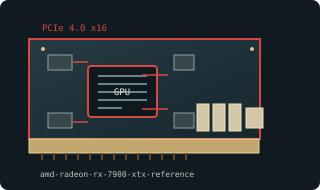

[ MODERN PCI EXPRESS GRAPHICS // IDENTIFIED COMPONENT ]
AMD Radeon RX 7900 XTX 24 GB Reference
Navi 31 / RDNA 3, 2022. This entry identifies one specific product configuration; closely named models and partner-board variants are distinguished below.

MODEL IDENTIFICATION: Figures are for AMD reference board. AIB cards may be longer/thicker, with changed power delivery, ports, and higher power; RX 7900 XT is separate 20 GB model.
Recorded specifications
| Cataloged product | AMD Radeon RX 7900 XTX 24 GB Reference |
|---|---|
| Generation / chip | Navi 31 / RDNA 3, 2022 |
| Core & memory | Navi 31 XTX; 6144 stream processors; 24 GB GDDR6; 384-bit interface; 355 W typical board power. |
| Host interface & I/O | PCI Express 4.0 x16; two 8-pin power connectors on AMD reference board; two DisplayPort 2.1, one HDMI 2.1, and USB-C output. |
| Variant boundary | Figures are for AMD reference board. AIB cards may be longer/thicker, with changed power delivery, ports, and higher power; RX 7900 XT is separate 20 GB model. |
| Archive record | Photograph label and PCB revision; record BIOS, driver version, adapters, physical condition, and source-document revision used to verify specimen. |
Compatibility & service notes
Reference card has vapor-chamber cooler and 2×8-pin power. XTX is 24 GB/384-bit; XT is distinct.
Check case clearance and cable routing. Inspect vapor chamber/cooler and connectors; preserve serial/part label and document firmware before updates; keep intake clear.
- Check slot signaling, keying, lane width, auxiliary power, clearance, and PSU requirements; physical insertion alone does not prove compatibility.
- Use drivers supporting this device ID and OS release. Preserve original driver/firmware before updates and record source.
- Do not energize cards with cracks, corrosion, damaged power sockets, obstructed fans, or suspected shorts; inspect before bench testing.
Manufacturer & standards sources
- AMD Radeon RX 7900 XTX product specificationsUse alongside the exact board label and revision; archived family data may not describe every OEM implementation.
- PCI-SIG PCI Express standardsUse alongside the exact board label and revision; archived family data may not describe every OEM implementation.
- Radeon RX 7900 XTX specsUse alongside the exact board label and revision; archived family data may not describe every OEM implementation.
Specifications describe the cataloged reference configuration only. Manufacturer manuals and physical product label take precedence for a specific OEM revision.